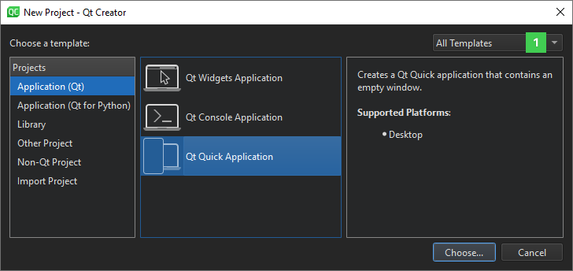
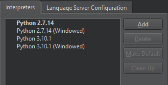
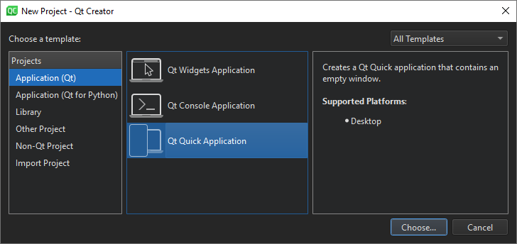

Creating Projects
Creating a project enables you to:
- Group files together
- Add custom build steps
- Include forms and resource files
- Specify settings for running applications
When you set up a new project in Qt Creator, a wizard guides you step-by-step through the process. The wizard templates prompt you to enter the settings that you need for that particular type of project and create the necessary files for you. You can add your own custom wizards to standardize the way of adding subprojects and classes to a project.
Most Qt Creator project wizards enable you to choose the build system to use for building the project: qmake, CMake, or Qbs. If you do not get to choose, the project uses qmake as the build system.
You can use wizards also to create plain C or C++ projects that use qmake, Qbs, or CMake, but do not use the Qt library.
In addition, you can import projects as generic projects that do not use qmake, Qbs, or CMake. This enables you to use Qt Creator as a code editor and to fully control the steps and commands used to build the project.
You can install tools for devices as part of Qt distributions. The installers create kits and specify build and run settings for the installed device types. However, you might need to install and configure some additional software on the devices to be able to connect to them from the development PC.
Selecting the Build System
You can use several build systems to build your projects.
qmake is a cross-platform system for build automation that helps simplify the build process for development projects across different platforms. qmake automates the generation of build configurations so that you need only a few lines of information to create each configuration. Qt installers install and configure qmake. To use one of the other supported build systems, you need to set it up.
CMake is an alternative to qmake for automating the generation of build configurations. For more information, see Setting Up CMake.
Meson Meson is a fast and user-friendly open-source build system that aims to minimize the time developers spend writing or debugging build definitions and waiting for the build system to start compiling code. For more information, see Setting Up Meson.
Qbs is an all-in-one build tool that generates a build graph from a high-level project description (like qmake or CMake do) and executes the commands in the low-level build graph (like make does). For more information, see Setting Up Qbs.
To change the location of the project directory, and to specify settings for building and running projects, select Edit > Preferences > Build & Run > General.
Specify build and run settings for different target platforms, in the Projects mode. For more information on the options you have, see Specifying Build Settings.
Using Project Wizards
In the first step, you select a template for the project. You can filter templates (1) to view only those that apply to a particular target platform.

Next, you select a location for the project and specify settings for it.
When you have completed the steps, Qt Creator automatically generates the project with required headers, source files, user interface descriptions and project files, as defined by the wizard.
For example, if you choose to create a Qt Quick application, Qt Creator generates a QML file that you can modify in the Edit mode.
Selecting Project Type
The following table lists the wizard templates for creating projects.
| Category | Wizard Template | Purpose |
|---|---|---|
| Application (Qt for MCU) | MCU Support Application | Creates an application that uses a subset of Qt QML and Qt Quick Controls types (as supported by Qt for MCUs) that you can deploy, run, and debug on MCU boards. For more information, see Connecting MCUs. |
| Application (Qt) | Qt Widgets Application | Uses Qt Designer forms to design a Qt widget based user interface for the desktop and C++ to implement the application logic. |
| Qt Console Application | Uses a single main.cpp file. | |
| Qt Quick Application | Creates a Qt Quick 2 application project that can contain both QML and C++ code. You can build the application and deploy it to desktop, embedded, and mobile target platforms. | |
| Application (Qt for Python) | Empty Application | Creates a Qt for Python application that contains only the main code for a QApplication. |
| Empty Window | Creates a Qt for Python application that contains an empty window. | |
| Window UI | Creates a Qt for Python application that contains an empty window with a widget-based UI. Preferred approach that requires you to generate a Python file from the .ui file, to import it directly into your application. | |
| Window UI - Dynamic load | Creates a Qt for Python application that contains an empty window with a widget-based UI. | |
| Qt Quick Application - Empty | Creates a Python project that contains an empty Qt Quick Application. | |
| Library | C++ Library | A shared or static C++ library based on qmake. |
| Qt Quick 2 Extension Plugin | Creates a C++ plugin that makes it possible to offer extensions that the QQmlEngine class can load dynamically into Qt Quick 2 applications. | |
| Qt Creator Plugin | Creates a Qt Creator plugin. | |
| Other Project | Qt Custom Designer Widget | Creates a custom Qt Designer widget or widget collection. |
| Qt Quick UI Prototype | Creates a Qt Quick UI project with a single QML file that contains the main view. You can preview Qt Quick 2 UI projects in the QML Scene preview tool. You do not need to build them because they do not contain any C++ code. Use this template only if you are prototyping. You cannot create a full application by using this template. You cannot deploy Qt Quick UI projects to embedded or mobile target platforms. For those platforms, create a Qt Quick application instead. | |
| Auto Test Project | Creates a project with boilerplate code for a Qt or Google test. For more information, see Creating Tests. | |
| Subdirs Project | Creates a subproject that enables you to structure your qmake projects as a tree hierarchy. | |
| Empty qmake Project | Creates an empty qmake project that uses qmake as the build system but does not use any default classes. | |
| Code Snippet | Creates a qmake project from a code snippet. When working on bug reports that contain a code snippet, you can place the code snippet into a project to compile and check it. | |
| Non-Qt Project | Plain C Application | Creates a plain C application that uses qmake, Qbs, or CMake but does not use the Qt library. |
| Plain C++ Application | Creates a plain C++ application that uses qmake, Qbs, or CMake but does not use the Qt library. | |
| Nim Application (experimental) | Creates a Nim application that uses Nimble, but does not use the Qt library. For more information, see Setting Up Nimble. | |
| Nimble Application (experimental) | Creates a Nimble application that uses Nimble, but does not use the Qt library. For more information, see Setting Up Nimble. | |
| Import Project | Project from version control | Imports a project from a supported version control system, such as Bazaar, CVS, Git, Mercurial, or Subversion. For more information about how Qt Creator integrates version control systems, see Using Version Control Systems. |
| Import as qmake or CMake Project (Limited Functionality) | Imports an existing project that does not use any of the supported build systems: qmake, Qbs, CMake, or Autotools. The template creates a project file, which enables you to use Qt Creator as a code editor and as a launcher for debugging and analysis tools. However, if you want to build the project, you might need to edit the generated project file. | |
| Import Existing Project | Imports an existing project that does not use any of the supported build systems: qmake, Qbs, CMake, or Autotools. This enables you to use Qt Creator as a code editor. | |
| Squish | Squish Test Suite | Creates a new Squish test suite. |
To create a new project, select File > New Project and select the type of your project. The contents of the wizard dialogs depend on the project type and the kits that you select in the Kit Selection dialog. Follow the instructions of the wizard.
For examples of creating different types of projects, see Tutorials.
For more information about creating Qt Quick projects, see Creating Qt Quick Projects.
Creating Widget-Based Qt for Python Applications
Qt for Python enables you to use Qt 6 API in Python applications. You can use the PySide6 modules to gain access to individual Qt modules, such as Qt Core, Qt GUI, and Qt Widgets.
If you have not installed PySide6, Qt Creator prompts you to install it after you create the project. Further, it prompts you to install the Python language server that provides services such as code completion and annotations. Select Install to install PySide6 and the language server.
To view and manage the available Python interpreters, select Edit > Preferences > Python > Interpreters.

You can add and remove interpreters and clean up references to interpreters that you uninstalled, but that still appear in the list. In addition, you can set the interpreter to use by default.
The Qt for Python Application wizards generate a .pyproject file that lists the files in the Python project and a .py file that contains some boilerplate code. In addition, the widget-based UI wizard creates a .ui file that contains a Qt Designer form, and the Qt Quick Application wizard creates a .qml file that contains Qt Quick controls.
The .pyproject files are JSON-based configuration files that replace the previously used .pyqtc configuration files. You can still open and use .pyqtc files, but we recommend that you choose .pyproject files for new projects.
The Window UI wizard enables you to create a Python project that contains the source file for a class. Specify the PySide version, class name, base class, and and source file for the class.

The wizard adds the imports to the source file to provide access to the QApplication, the base class you selected in the Qt Widgets module, and Qt UI tools:
import sys from PySide6.QtWidgets import QApplication, QWidget
Note: It is important that you first create the Python code from your UI form. In PySide6, you can do this by executing pyside6-uic form.ui -o ui_form.py on a terminal. This enables you to import the class that represents your UI from that Python file.
Once you generate the Python code from the UI file, you can import the class:
from ui_form import Ui_Widget
The wizard also adds a main class with the specified name that inherits from the specified base class:
class Widget(QWidget):
def __init__(self, parent=None):
super().__init__(parent)
The following lines in the main class instantiate the generated Python class from your UI file, and set up the interface for the current class.
self.ui = Ui_Widget() self.ui.setupUi(self)
Note: You can access the UI elements of the new class as member variables. For example, if you have a button called button1, you can interact with it using self.ui.button1.
Next, the wizard adds a main function, where it creates a QApplication instance. As Qt can receive arguments from the command line, you can pass any arguments to the QApplication object. Usually, you do not need to pass any arguments, and you can use the following approach:
if __name__ == "__main__":
app = QApplication(sys.argv)
Next, the wizard instantiates the MainWindow class and shows it:
widget = Widget() widget.show() ...
Finally, the wizard calls the app.exec() method to enter the Qt main loop and start executing the Qt code:
sys.exit(app.exec())
You can now modify the boilerplate code in the Edit mode to develop your Python application. Select REPL on the toolbar to start the Python interactive shell. To start the shell and import the current file as a module, select select REPL Import File. To also import all functions from the file, select REPL Import *.
Always regenerate the Python code after modifying a UI file.
Open the .ui file in the Design mode to create a widget-based UI in Qt Designer.
The Window wizard adds similar code to the source file, without the UI bits.
The Empty wizard adds similar code to the source file, but it does not add any classes, so you need to add and instantiate them yourself.
For more information about the Qt for Python - Qt Quick Application - Empty wizard, see Creating Qt Quick Based Python Applications.
For examples of creating Qt for Python applications, see Qt for Python Examples and Tutorials.
Specifying Project Contents
A project can contain files that should be:
- Compiled or otherwise handled by the build
- Installed
- Not installed, but included in a source package created with
make dist - Not installed, nor be part of a source package, but still be known to Qt Creator
Qt Creator displays all files that you declare to be part of the project by the project files in the Projects view. It sorts the files into categories by file type (.cpp, .h, .qrc, and so on). To display additional files, edit the project file. Alternatively, you can see all the files in a project directory in the File System view.
Declaring files as a part of the project also makes them visible to the locator and project-wide search.
CMake Projects
When using CMake, you can specify additional files for a project by either adding them as sources or installing them.
In the CMakeLists.txt file, define the files as values of the target_sources command using the PRIVATE property, for example.
You can prevent CMake from handling some files, such as a .cpp file that should not be compiled. Use the set_property command and the HEADER_FILE_ONLY property to specify such files. For example:
set_property(SOURCE "${files}" PROPERTY HEADER_FILE_ONLY ON)
Alternatively, to install the files, use the install command with the FILES or DIRECTORY property.
qmake Projects
Use the following variables in the .pro file:
SOURCESandHEADERSfor files to compileINSTALLSfor files to installDISTFILESfor files to include in a source packageOTHER_FILESfor files to manage with Qt Creator without installing them or including them in source packages
For example, the following value includes text files in the source package:
DISTFILES += *.txt
Adding Subprojects to Projects
In addition to Qt libraries, you can link your application to other libraries, such as system libraries or your own libraries. Further, your own libraries might link to other libraries. To be able to compile your project, you must add the libraries to your project. This also enables code completion and syntax highlighting for the libraries. The procedure of adding a library to a project depends on the build system that you use.
CMake Projects
You can add CMakeLists.txt files to any project by using the add_subdirectory command. The files can define complete projects that you include into the top-level project or any other CMake commands.
qmake Projects
When you create a new project and select qmake as the build system, you can add it to another project as a subproject in the Project Management dialog. However, the root project must specify that qmake uses the subdirs template to build the project.
To create a root project, select File > New Project > Other Project > Subdirs Project > Choose.
On the Summary page, select Finish & Add Subproject to create the root project and to add another project, such as a C++ library.
The wizard creates a project file (.pro) that defines a subdirs template and the subproject that you add as a value of the SUBDIRS variable. It also adds all the necessary files for the subproject.
To create more subprojects, right-click the project name in the Projects view to open the context menu, and select New Subproject. Follow the steps in the New Subproject wizard to create a subproject.

To add an existing project as a subproject, select Add Existing Projects in the context menu. In the file browser dialog, locate your subproject.
To remove subprojects, right-click the project name in the Projects view, and select Remove Subproject in the context menu.
To specify dependencies, use the Add Library wizard. For more information, see Adding Libraries to Projects.
Binding Keyboard Shortcuts to Wizards
If you use a wizard regularly, you can bind a custom keyboard shortcut to it. Triggering this keyboard shortcut directly opens the wizard, so you do not need to navigate to File > New File or New Project.
Set keyboard shortcuts for wizards in Edit > Preferences > Environment > Keyboard > Wizard. All wizard actions start with Impl there.